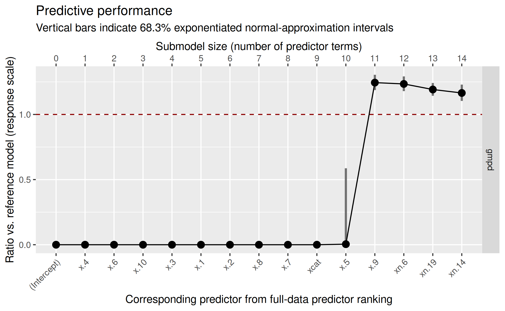
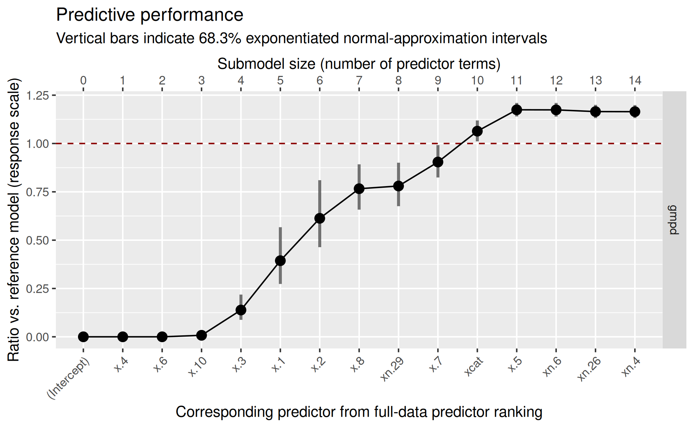
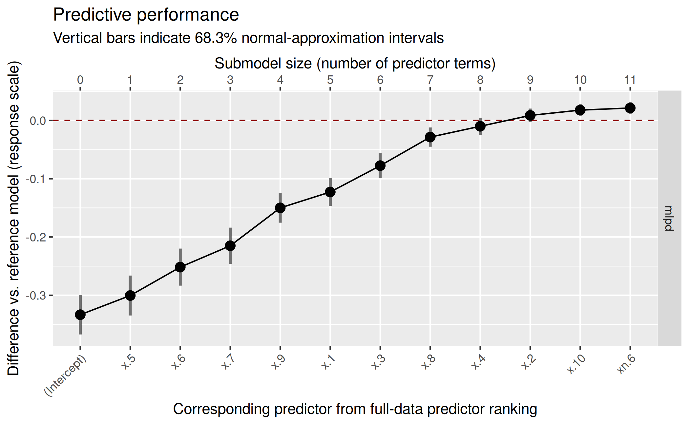
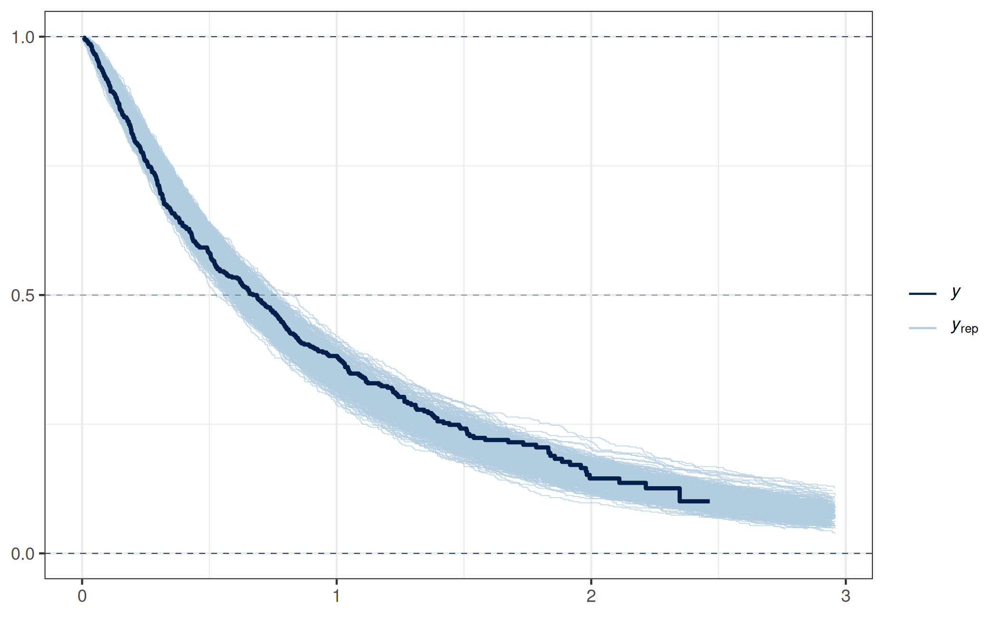
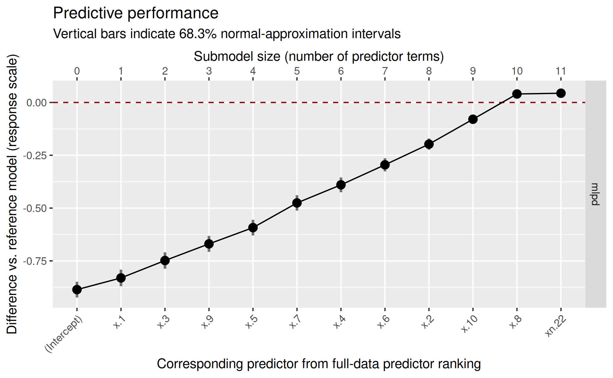
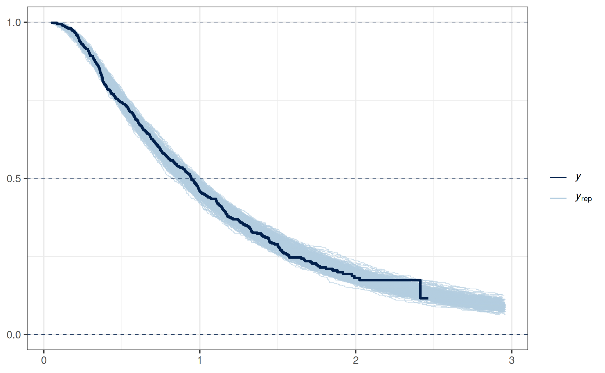

Introduction
This vignette shows how to use the latent projection predictive feature selection from Catalina, Bürkner, and Vehtari (2021) in projpred. We recommend to read the main vignette first, as the latent-projection vignette presented here will skip some of the details explained in the main vignette.
General idea
The response families used in GLMs (McCullagh and Nelder 1989, chap.
2), GLMMs, GAMs, and GAMMs (in particular, the
gaussian(), the binomial(), and the
poisson() family which are supported by
projpred’s traditional projection) may be termed
exponential dispersion (ED) families (Jørgensen 1987)1. For a
response family that is not an ED family, the Kullback-Leibler (KL)
divergence minimization problem (see Piironen, Paasiniemi, and Vehtari
2020) is often not easy to solve analytically (exceptions are
non-ED families that are discrete and have finite support; see the
comment on the augmented-data projection in section “Implementation”). In order to bypass this issue, the
latent projection (Catalina, Bürkner, and Vehtari
2021) solves the KL minimization problem in the predictive
space of the latent predictors2 instead of in the predictive space of the
original response values.
To this end, the latent predictor is assumed to have a Gaussian distribution, since it (i) constitutes a combination of predictor data and regression parameters which is often linear (in the parameters, but—less—often also in the predictor data) or at least additive (across the predictor terms) and (ii) has the complete real line as support. Furthermore, the Gaussian distribution has the highest differential entropy among all distributions with two finite moments and with the real line as support (see, e.g., Cover and Thomas 1991). In some cases, e.g., for the probit link, the Gaussian distribution is even part of the original statistical model. In case of the logit link, the Gaussian distribution with a standard deviation of 1.6 approximates the logistic distribution (with a scale parameter of 1).
The assumption of a Gaussian distribution for the latent predictors makes things a lot easier because it allows us to make use of projpred’s traditional projection.
As illustrated by the Poisson example below, the latent projection can not only be used for families not supported by projpred’s traditional projection, but it can also be beneficial for families supported by it. The remaining examples show that the latent projection offers support for models (and censored observations) that the traditional (or augmented-data) projection do not support.
Implementation
To use the latent projection in projpred, argument
latent of extend_family() needs to be set to
TRUE. Since extend_family() is called by
init_refmodel() which in turn is called by
get_refmodel() (more precisely, by the
get_refmodel() methods) which in turn is called at the
beginning of the top-level functions project(),
varsel(), and cv_varsel(), it is possible to
pass latent = TRUE from such a top-level function down to
extend_family() via the ellipsis (...).
However, we recommend to define the reference model object of class
refmodel explicitly (as illustrated in the examples below)
to avoid repetitive and inefficient code3.
After performing the projection (either as a stand-alone feature via
project() or embedded in a variable selection via
varsel() or cv_varsel()), the post-processing
(e.g., the estimation of the performance statistics in
summary.vsel()) can be performed on the original response
scale. For this, there are three arguments of
extend_family() which accept R functions:
latent_ilink (responsible for the inverse-link
transformation from latent scale to response scale),
latent_ll_oscale (responsible for the calculation of
log-likelihood values on response scale), and
latent_ppd_oscale (responsible for drawing from the
(posterior-projection) predictive distribution on response scale). For
some families, these three arguments have internal defaults implemented
natively in projpred. These families are listed in the
main vignette (section “Supported
types of models”). For all other families, projpred
either tries to infer a reasonable function internally (in case of
latent_ilink) or uses a dummy function returning only
NAs (in case of latent_ll_oscale and
latent_ppd_oscale), unless the user supplies custom
functions. When creating a reference model object for a family that
lacks projpred’s native support for full response-scale
post-processing, projpred will throw messages stating
whether (and which) features will be unavailable unless at least some of
these three arguments are provided by the user. Again, the ellipsis
(...) can be used to pass these arguments from a top-level
function such as cv_varsel() down to
extend_family(). In the post-processing functions,
response-scale analyses can usually be deactivated by setting argument
resp_oscale to FALSE, with the exception of
predict.refmodel() and proj_linpred() where
arguments type and transform serve this
purpose (see the documentation).
Apart from the arguments mentioned above,
extend_family() also features the latent-projection
argument latent_y_unqs whose purpose is described in the
documentation.
While the latent projection is an approximate solution to the KL divergence minimization problem in the original response space4, the augmented-data projection (Weber, Glass, and Vehtari 2025) gives the exact5 solution for some non-ED families, namely those where the response distribution has finite support. However, the augmented-data projection comes with a higher runtime than the latent projection. The families currently supported by projpred’s augmented-data projection are also listed in the main vignette (again section “Supported types of models”).
Example: Poisson distribution
In this example, we will illustrate that in case of a family
supported by projpred’s traditional projection (here
the poisson() family), the latent projection can improve
runtime and results of the variable selection compared to
projpred’s traditional projection, at least if the L1
search is used (see argument method of
varsel() and cv_varsel()).
Data
First, we generate a training and a test dataset with a Poisson-distributed response:
# Number of observations in the training dataset (= number of observations in
# the test dataset):
N <- 71
# Data-generating function:
sim_poiss <- function(nobs = 2 * N, ncon = 10, ncats = 4, nnoise = 39) {
# Regression coefficients for continuous predictors:
coefs_con <- rnorm(ncon)
# Continuous predictors:
dat_sim <- matrix(rnorm(nobs * ncon), ncol = ncon)
# Start linear predictor:
linpred <- 2.1 + dat_sim %*% coefs_con
# Categorical predictor:
dat_sim <- data.frame(
x = dat_sim,
xcat = gl(n = ncats, k = nobs %/% ncats, length = nobs,
labels = paste0("cat", seq_len(ncats)))
)
# Regression coefficients for the categorical predictor:
coefs_cat <- rnorm(ncats)
# Continue linear predictor:
linpred <- linpred + coefs_cat[dat_sim$xcat]
# Noise predictors:
dat_sim <- data.frame(
dat_sim,
xn = matrix(rnorm(nobs * nnoise), ncol = nnoise)
)
# Poisson response, using the log link (i.e., exp() as inverse link):
dat_sim$y <- rpois(nobs, lambda = exp(linpred))
# Shuffle order of observations:
dat_sim <- dat_sim[sample.int(nobs), , drop = FALSE]
# Drop the shuffled original row names:
rownames(dat_sim) <- NULL
return(dat_sim)
}
# Generate data:
set.seed(300417)
dat_poiss <- sim_poiss()
dat_poiss_train <- head(dat_poiss, N)
dat_poiss_test <- tail(dat_poiss, N)Reference model
Next, we fit the reference model that we consider as the best model (in terms of predictive performance) that we can construct (here, we assume that we don’t know about the true data-generating process even though the dataset was simulated):
[1] 50
# Prior guess for the number of relevant (i.e., non-zero) regression
# coefficients:
p0 <- 10
# Prior guess for the overall magnitude of the response values, see Table 1 of
# Piironen and Vehtari (2017, DOI: 10.1214/17-EJS1337SI):
mu_prior <- 100
# Hyperprior scale for tau, the global shrinkage parameter:
tau0 <- p0 / (D - p0) / sqrt(mu_prior) / sqrt(N)
# Set this manually if desired:
ncores <- parallel::detectCores(logical = FALSE)
### Only for technical reasons in this vignette (you can omit this when running
### the code yourself):
ncores <- min(ncores, 2L)
###
options(mc.cores = ncores)
refm_fml <- as.formula(paste("y", "~", paste(
grep("^x", names(dat_poiss_train), value = TRUE),
collapse = " + "
)))
refm_fit_poiss <- stan_glm(
formula = refm_fml,
family = poisson(),
data = dat_poiss_train,
prior = hs(global_scale = tau0, slab_df = 100, slab_scale = 1),
### Only for the sake of speed (not recommended in general):
chains = 2, iter = 1000,
###
refresh = 0
)Warning: Bulk Effective Samples Size (ESS) is too low, indicating posterior means and medians may be unreliable.
Running the chains for more iterations may help. See
https://mc-stan.org/misc/warnings.html#bulk-essDue to the technical reasons for which we reduced chains
and iter in this vignette, we ignore the bulk-ESS warning
here.
Variable selection using the latent projection
Within projpred, we define the reference model
object explicitly and set latent = TRUE in the
corresponding get_refmodel() call (see section “Implementation”) so that the latent projection is used
in downstream functions. Since we have a hold-out test dataset
available, we can use varsel() with argument
d_test instead of cv_varsel(). Furthermore, we
measure the runtime to be able to compare it to the traditional
projection’s later:
d_test_lat_poiss <- list(
data = dat_poiss_test,
offset = rep(0, nrow(dat_poiss_test)),
weights = rep(1, nrow(dat_poiss_test)),
### Here, we are not interested in latent-scale post-processing, so we can set
### element `y` to a vector of `NA`s:
y = rep(NA, nrow(dat_poiss_test)),
###
y_oscale = dat_poiss_test$y
)
refm_poiss <- get_refmodel(refm_fit_poiss, latent = TRUE)Since `<refmodel>$dis` will consist of only `NA`s, downstream analyses based on this reference model object won't be able to use log predictive density (LPD) values on latent scale. Furthermore, proj_predict() won't be able to draw from the latent Gaussian distribution.
time_lat <- system.time(vs_lat <- varsel(
refm_poiss,
d_test = d_test_lat_poiss,
### Only for demonstrating an issue with the traditional projection in the
### next step (not recommended in general):
method = "L1",
###
### Only for the sake of speed (not recommended in general):
nclusters_pred = 20,
###
nterms_max = 14,
### In interactive use, we recommend not to deactivate the verbose mode:
verbose = 0,
###
### For comparability with varsel() based on the traditional projection:
seed = 95930
###
))
print(time_lat) user system elapsed
1.093 0.316 1.051 The message telling that <refmodel>$dis consists
of only NAs will not concern us here because we will only
focus on response-scale post-processing.
In order to decide for a submodel size, we first inspect the
plot() results. In contrast to the main vignette where we
used the mean log predictive density (MLPD) as predictive performance
statistic for a gaussian() family reference model (and
gaussian() submodels), we have a discrete family
(poisson()) here, so it makes sense to exponentiate the
MLPD to obtain the geometric mean predictive density (GMPD; in case of a
discrete response, the predictive density values are actually predictive
probabilities and hence the GMPD is bounded by 0 and 1). As in
the main vignette, we plot with deltas = TRUE (in case of
the GMPD, this means that the ratio of the submodel GMPD
vs. the reference model GMPD is shown). Via global option
projpred.plot_vsel_size_position, we set argument
size_position of plot.vsel() to
"secondary_x" to make the submodel sizes readable in all of
the plots in this vignette.
options(projpred.plot_vsel_size_position = "secondary_x")
( gg_lat <- plot(vs_lat, stats = "gmpd", deltas = TRUE) )
Based on this plot, we decide for a submodel size of 11:
size_decided_lat <- 11This is also the size that suggest_size() would
suggest:
suggest_size(vs_lat, stat = "gmpd")[1] 11In the predictor ranking up to the selected size of 11, we can see that projpred has correctly selected the truly relevant predictors first and only then the noise predictors:
[1] "x.4" "x.6" "x.10" "x.3" "x.1" "x.2" "x.8" "x.7" "xcat" "x.5"
[11] "x.9" We will skip post-selection inference here (see the main vignette for
a demonstration of post-selection inference), but note that
proj_predict() has argument resp_oscale for
controlling whether to draw from the posterior-projection predictive
distributions on the original response scale (TRUE, the
default) or on latent scale (FALSE) and that analogous
functionality is available in proj_linpred() (argument
transform) and predict.refmodel() (argument
type).
Variable selection using the traditional projection
We will now look at what projpred’s traditional
projection would have given. For this, we increase
nterms_max because this will reveal an issue with this
approach:
d_test_trad_poiss <- d_test_lat_poiss
d_test_trad_poiss$y <- d_test_trad_poiss$y_oscale
d_test_trad_poiss$y_oscale <- NULL
time_trad <- system.time(vs_trad <- varsel(
refm_fit_poiss,
d_test = d_test_trad_poiss,
### Only for demonstrating an issue with the traditional projection (not
### recommended in general):
method = "L1",
###
### Only for the sake of speed (not recommended in general):
nclusters_pred = 20,
###
nterms_max = 30,
### In interactive use, we recommend not to deactivate the verbose mode:
verbose = 0,
###
### For comparability with varsel() based on the latent projection:
seed = 95930
###
))
print(time_trad) user system elapsed
4.306 0.350 4.255
( gg_trad <- plot(vs_trad, stats = "gmpd", deltas = TRUE) ) As these results show, the traditional projection takes longer than the
latent projection, although the difference is rather small on absolute
scale (which is due to the fact that the L1 search is already quite
fast). More importantly however, the predictor ranking contains several
noise terms before truly relevant ones, causing the predictive
performance of the reference model not to be reached before submodel
size 28.
As these results show, the traditional projection takes longer than the
latent projection, although the difference is rather small on absolute
scale (which is due to the fact that the L1 search is already quite
fast). More importantly however, the predictor ranking contains several
noise terms before truly relevant ones, causing the predictive
performance of the reference model not to be reached before submodel
size 28.
Conclusion
This example showed that the latent projection can be advantageous also for families supported by projpred’s traditional projection by improving the runtime as well as the results of the variable selection.
An important point is that we have used L1 search here. In case of the latent projection, a forward search would have given only slightly different results. However, in case of the traditional projection, a forward search would have given markedly better results (in particular, all of the noise terms would have been selected after the truly relevant ones). Thus, the conclusions made here for L1 search cannot be transmitted easily to forward search.
Example: Negative binomial distribution
In this example, we will illustrate the latent projection in case of
the negative binomial family (more precisely, we will use the
rstanarm::neg_binomial_2() family here) which is a family
that is not supported by projpred’s traditional
projection6.
Reference model
We now fit a reference model with the negative binomial distribution
as response family. For the sake of simplicity, we won’t adjust
tau0 to this new family, but in a real-world example, such
an adjustment would be necessary. However, since Table 1 of Piironen and Vehtari (2017) does not list the
negative binomial distribution, this would first require a manual
derivation of the pseudo-variance \(\tilde{\sigma}^2\).
refm_fit_nebin <- stan_glm(
formula = refm_fml,
family = neg_binomial_2(),
data = dat_poiss_train,
prior = hs(global_scale = tau0, slab_df = 100, slab_scale = 1),
### Only for the sake of speed (not recommended in general):
chains = 2, iter = 1000,
###
refresh = 0
)Warning: Bulk Effective Samples Size (ESS) is too low, indicating posterior means and medians may be unreliable.
Running the chains for more iterations may help. See
https://mc-stan.org/misc/warnings.html#bulk-essAgain, we ignore the bulk-ESS warning due to the technical reasons
for which we reduced chains and iter in this
vignette.
Variable selection using the latent projection
To request the latent projection with latent = TRUE, we
now need to specify more arguments (latent_ll_oscale and
latent_ppd_oscale; the internal default for
latent_ilink works correctly in this example) which will be
passed to extend_family()7:
refm_prec <- as.matrix(refm_fit_nebin)[, "reciprocal_dispersion", drop = FALSE]
latent_ll_oscale_nebin <- function(ilpreds,
dis = rep(NA, nrow(ilpreds)),
y_oscale,
wobs = rep(1, ncol(ilpreds)),
cens,
cl_ref,
wdraws_ref = rep(1, length(cl_ref))) {
y_oscale_mat <- matrix(y_oscale, nrow = nrow(ilpreds), ncol = ncol(ilpreds),
byrow = TRUE)
wobs_mat <- matrix(wobs, nrow = nrow(ilpreds), ncol = ncol(ilpreds),
byrow = TRUE)
refm_prec_agg <- cl_agg(refm_prec, cl = cl_ref, wdraws = wdraws_ref)
ll_unw <- dnbinom(y_oscale_mat, size = refm_prec_agg, mu = ilpreds, log = TRUE)
return(wobs_mat * ll_unw)
}
latent_ppd_oscale_nebin <- function(ilpreds_resamp,
dis_resamp = rep(NA, nrow(ilpreds_resamp)),
wobs = rep(1, ncol(ilpreds_resamp)),
cl_ref,
wdraws_ref = rep(1, length(cl_ref)),
idxs_prjdraws) {
refm_prec_agg <- cl_agg(refm_prec, cl = cl_ref, wdraws = wdraws_ref)
refm_prec_agg_resamp <- refm_prec_agg[idxs_prjdraws, , drop = FALSE]
ppd <- rnbinom(prod(dim(ilpreds_resamp)), size = refm_prec_agg_resamp,
mu = ilpreds_resamp)
ppd <- matrix(ppd, nrow = nrow(ilpreds_resamp), ncol = ncol(ilpreds_resamp))
return(ppd)
}
refm_nebin <- get_refmodel(refm_fit_nebin, latent = TRUE,
latent_ll_oscale = latent_ll_oscale_nebin,
latent_ppd_oscale = latent_ppd_oscale_nebin)Defining `latent_ilink` as a function which calls `family$linkinv`, but there is no guarantee that this will work for all families. If relying on `family$linkinv` is not appropriate or if this raises an error in downstream functions, supply a custom `latent_ilink` function (which is also allowed to return only `NA`s if response-scale post-processing is not needed).Since `<refmodel>$dis` will consist of only `NA`s, downstream analyses based on this reference model object won't be able to use log predictive density (LPD) values on latent scale. Furthermore, proj_predict() won't be able to draw from the latent Gaussian distribution.
vs_nebin <- varsel(
refm_nebin,
d_test = d_test_lat_poiss,
### Only for the sake of speed (not recommended in general):
method = "L1",
nclusters_pred = 20,
###
nterms_max = 14,
### In interactive use, we recommend not to deactivate the verbose mode:
verbose = 0
###
)Again, the message telling that <refmodel>$dis
consists of only NAs will not concern us here because we
will only focus on response-scale post-processing. The message
concerning latent_ilink can be safely ignored here (the
internal default based on family$linkinv works correctly in
this case).
Again, we first inspect the plot() results to decide for
a submodel size:
( gg_nebin <- plot(vs_nebin, stats = "gmpd", deltas = TRUE) )
For the decision of the final submodel size, we act as if we preferred accuracy over sparsity in their trade-off mentioned in the main vignette, so we decide for a submodel size of 11:
size_decided_nebin <- 11This is not the size that suggest_size() would suggest,
but as mentioned in the main vignette and in the documentation,
suggest_size() provides only a quite heuristic decision (so
we stick with our manual decision here):
suggest_size(vs_nebin, stat = "gmpd")[1] 10As we can see from the predictor ranking included in the plot, our
selected 11 predictor terms lack one truly relevant predictor
(x.9) and include one noise term (xn.29). More
explicitly, our selected predictor terms are:
rk_nebin <- ranking(vs_nebin)
( predictors_final_nebin <- head(rk_nebin[["fulldata"]],
size_decided_nebin) ) [1] "x.4" "x.6" "x.10" "x.3" "x.1" "x.2" "x.8" "xn.29" "x.7"
[10] "xcat" "x.5" Again, we will skip post-selection inference here (see the main vignette for a demonstration of post-selection inference).
Censored observations (survival analysis)
Response-scale analyses for models with censored responses (e.g., for
time-to-event models as occurring in survival analysis) are possible
when using the latent projection in combination with a custom
latent_ll_oscale function (see ?extend_family)
that has an attribute called cens_var and makes use of its
argument cens8.
We will illustrate this here using simulated data and right censoring, first with a Weibull response and then with a log-normal response. Both examples are adapted from a thread on The Stan Forums. Here, we use the following common simulation part:
N_surv <- 500
n_pred <- 50
n_pred_truth <- 10
n_pred_noise <- n_pred - n_pred_truth
dat_sim_surv <- matrix(rnorm(N_surv * n_pred), ncol = n_pred)
colnames(dat_sim_surv) <- paste0("x", c(paste0(".", seq_len(n_pred_truth)),
paste0("n.", seq_len(n_pred_noise))))
linpreds_surv <- -0.1 +
dat_sim_surv[, seq_len(n_pred_truth), drop = FALSE] %*%
rep_len(c(0.3, -0.2), length.out = n_pred_truth)
epreds_surv <- exp(linpreds_surv)
dat_sim_surv <- as.data.frame(dat_sim_surv)
cens_surv <- runif(N_surv,
min = quantile(epreds_surv, probs = 0.4),
max = quantile(epreds_surv, probs = 0.9))Example: Weibull distribution with right-censored observations
For the Weibull model, we complete our data generation as follows:
shape_weib <- 1.2
scales_weib <- epreds_surv / (gamma(1 + (1 / shape_weib)))
y_weib <- rweibull(N_surv, shape = shape_weib, scale = scales_weib)
is_event_weib <- y_weib < cens_surv
yobs_weib <- y_weib
yobs_weib[!is_event_weib] <- cens_surv[!is_event_weib]
dat_sim_weib <- data.frame(yobs = yobs_weib,
is_censored = 1 - is_event_weib,
dat_sim_surv)We now fit a reference model in brms:
refm_fit_weib <- brms::brm(
formula = yobs | cens(is_censored) ~ .,
family = brms::weibull(),
data = dat_sim_weib,
prior = brms::prior(R2D2(mean_R2 = 0.4, prec_R2 = 2.5, cons_D2 = 1)),
### Only for the sake of speed (not recommended in general):
chains = 2,
###
silent = 2,
refresh = 0
)The following code prepares the cv_varsel() run and the
downstream projpred steps:
refm_shape <- as.matrix(refm_fit_weib)[, "shape", drop = FALSE]
latent_ll_oscale_weib <- structure(function(
ilpreds,
dis = rep(NA, nrow(ilpreds)),
y_oscale,
wobs = rep(1, ncol(ilpreds)),
cens,
cl_ref,
wdraws_ref = rep(1, length(cl_ref))
) {
idxs_cens <- which(cens == 1)
idxs_event <- setdiff(seq_along(cens), idxs_cens)
wobs_mat <- matrix(wobs, nrow = nrow(ilpreds), ncol = ncol(ilpreds),
byrow = TRUE)
refm_shape_agg <- cl_agg(refm_shape, cl = cl_ref, wdraws = wdraws_ref)
ll_unw <- matrix(nrow = nrow(ilpreds), ncol = ncol(ilpreds))
for (idx_cens in idxs_cens) {
ll_unw[, idx_cens] <- pweibull(
y_oscale[idx_cens],
shape = refm_shape_agg,
scale = ilpreds[, idx_cens] / gamma(1 + 1 / as.vector(refm_shape_agg)),
lower.tail = FALSE,
log.p = TRUE
)
}
for (idx_event in idxs_event) {
ll_unw[, idx_event] <- dweibull(
y_oscale[idx_event],
shape = refm_shape_agg,
scale = ilpreds[, idx_event] / gamma(1 + 1 / as.vector(refm_shape_agg)),
log = TRUE
)
}
return(wobs_mat * ll_unw)
}, cens_var = ~ is_censored)
latent_ppd_oscale_weib <- function(
ilpreds_resamp,
dis_resamp = rep(NA, nrow(ilpreds_resamp)),
wobs = rep(1, ncol(ilpreds_resamp)),
cl_ref,
wdraws_ref = rep(1, length(cl_ref)),
idxs_prjdraws
) {
warning("The draws from this `latent_ppd_oscale` function are uncensored.")
refm_shape_agg <- cl_agg(refm_shape, cl = cl_ref, wdraws = wdraws_ref)
refm_shape_agg_resamp <- refm_shape_agg[idxs_prjdraws, , drop = FALSE]
ppd <- rweibull(
prod(dim(ilpreds_resamp)),
shape = refm_shape_agg_resamp,
scale = ilpreds_resamp / gamma(1 + 1 / as.vector(refm_shape_agg_resamp))
)
ppd <- matrix(ppd, nrow = nrow(ilpreds_resamp), ncol = ncol(ilpreds_resamp))
return(ppd)
}
refm_weib <- get_refmodel(
refm_fit_weib,
latent = TRUE,
latent_ll_oscale = latent_ll_oscale_weib,
latent_ppd_oscale = latent_ppd_oscale_weib
)Defining `latent_ilink` as a function which calls `family$linkinv`, but there is no guarantee that this will work for all families. If relying on `family$linkinv` is not appropriate or if this raises an error in downstream functions, supply a custom `latent_ilink` function (which is also allowed to return only `NA`s if response-scale post-processing is not needed).Since `<refmodel>$dis` will consist of only `NA`s, downstream analyses based on this reference model object won't be able to use log predictive density (LPD) values on latent scale. Furthermore, proj_predict() won't be able to draw from the latent Gaussian distribution.Again, the message telling that <refmodel>$dis
consists of only NAs will not concern us here because we
will only focus on response-scale post-processing. The message
concerning latent_ilink can be safely ignored here (the
internal default based on family$linkinv works correctly in
this case).
Run cv_varsel():
# For running projpred's CV in parallel (see cv_varsel()'s argument `parallel`):
# Note: Parallel processing is disabled during package building to avoid issues
use_parallel <- FALSE # Set to TRUE for actual parallel processing
if (use_parallel) {
doParallel::registerDoParallel(ncores)
}
cvvs_weib <- cv_varsel(
refm_weib,
### Only for the sake of speed (not recommended in general):
method = "L1",
nloo = min(N_surv, 10),
nterms_max = 11,
nclusters_pred = 20,
###
parallel = use_parallel,
### In interactive use, we recommend not to deactivate the verbose mode:
verbose = 0
###
)Warning: Some Pareto k diagnostic values are too high. See help('pareto-k-diagnostic') for details.Warning: Some (2 / 500) Pareto k's for the reference model's PSIS-LOO weights
are > 0.7.Warning: In the recalculation of the latent response values, some (6 / 500) expectation-specific Pareto k-values are > 0.7.
In general, we recommend K-fold CV in this case.Warning: Some Pareto k diagnostic values are too high. See help('pareto-k-diagnostic') for details.Warning: Some (2 / 500) Pareto k's for the reference model's PSIS-LOO weights
are > 0.7.Warning: In the recalculation of the latent response values, some (6 / 500) expectation-specific Pareto k-values are > 0.7.
In general, we recommend K-fold CV in this case.Using standard importance sampling (SIS) due to a small number of clusters.
# Tear down the CV parallelization setup:
if (use_parallel) {
doParallel::stopImplicitCluster()
foreach::registerDoSEQ()
}In this case, we will ignore the warnings about high Pareto-\(\hat{k}\) values because we chose quite
rough settings (e.g., only 2 MCMC chains) in this vignette (for
technical reasons). We will also ignore the warning that SIS is used
(instead of PSIS) because this is due to
nclusters_pred = 20 which we used only to speed up the
building of the vignette.
Plot the results:
plot(cvvs_weib, stats = "mlpd", deltas = TRUE) Hence, the truly relevant predictors are identified correctly.
Project onto the submodel consisting of the first
n_pred_truth predictors and perform a “posterior-projection
predictive check” (PPPC):
predictors_final_weib <- head(ranking(cvvs_weib)[["fulldata"]], n_pred_truth)
prj_weib <- project(refm_weib, predictor_terms = predictors_final_weib)
prj_predict_weib <- proj_predict(prj_weib)Warning in proj$refmodel$family$latent_ppd_oscale(mu_oscale_resamp, dis_resamp
= proj$dis[draw_inds], : The draws from this `latent_ppd_oscale` function are
uncensored.
bayesplot::bayesplot_theme_set(ggplot2::theme_bw())
bayesplot::ppc_km_overlay(y = dat_sim_weib$yobs, yrep = prj_predict_weib,
status_y = 1 - dat_sim_weib$is_censored)Note: `extrapolation_factor` now defaults to 1.2 (20%).
To display all posterior predictive draws, set `extrapolation_factor = Inf`.Warning:
[1m
[22mUsing `size` aesthetic for lines was deprecated in ggplot2 3.4.0.
[36mℹ
[39m Please use `linewidth` instead.
[36mℹ
[39m The deprecated feature was likely used in the
[34mbayesplot
[39m package.
Please report the issue at
[3m
[34m<https://github.com/stan-dev/bayesplot/issues/>
[39m
[23m.
[90mThis warning is displayed once every 8 hours.
[39m
[90mCall `lifecycle::last_lifecycle_warnings()` to see where this warning was
[39m
[90mgenerated.
[39m
As expected, this PPPC indicates that this submodel is a reasonable one (keeping in mind that such a PPPC is just a single model-diagnostic tool).
Example: Log-normal distribution with right-censored observations
For the log-normal model, we complete our data generation as follows:
sdlog_lnorm <- 0.3
y_lnorm <- rlnorm(N_surv, meanlog = linpreds_surv, sdlog = sdlog_lnorm)
is_event_lnorm <- y_lnorm < cens_surv
yobs_lnorm <- y_lnorm
yobs_lnorm[!is_event_lnorm] <- cens_surv[!is_event_lnorm]
dat_sim_lnorm <- data.frame(yobs = yobs_lnorm,
is_censored = 1 - is_event_lnorm,
dat_sim_surv)Again, we fit a reference model in brms:
refm_fit_lnorm <- brms::brm(
formula = yobs | cens(is_censored) ~ .,
family = brms::lognormal(),
data = dat_sim_lnorm,
prior = brms::prior(R2D2(mean_R2 = 0.4, prec_R2 = 2.5, cons_D2 = 1)),
### Only for the sake of speed (not recommended in general):
chains = 2,
###
silent = 2,
refresh = 0
)The following code prepares the cv_varsel() run and the
downstream projpred steps:
latent_ll_oscale_lnorm <- structure(function(
ilpreds,
dis = rep(NA, nrow(ilpreds)),
y_oscale,
wobs = rep(1, ncol(ilpreds)),
cens,
cl_ref,
wdraws_ref = rep(1, length(cl_ref))
) {
idxs_cens <- which(cens == 1)
idxs_event <- setdiff(seq_along(cens), idxs_cens)
wobs_mat <- matrix(wobs, nrow = nrow(ilpreds), ncol = ncol(ilpreds),
byrow = TRUE)
ll_unw <- matrix(nrow = nrow(ilpreds), ncol = ncol(ilpreds))
for (idx_cens in idxs_cens) {
ll_unw[, idx_cens] <- plnorm(
y_oscale[idx_cens],
meanlog = ilpreds[, idx_cens],
sdlog = dis,
lower.tail = FALSE,
log.p = TRUE
)
}
for (idx_event in idxs_event) {
ll_unw[, idx_event] <- dlnorm(
y_oscale[idx_event],
meanlog = ilpreds[, idx_event],
sdlog = dis,
log = TRUE
)
}
return(wobs_mat * ll_unw)
}, cens_var = ~ is_censored)
latent_ppd_oscale_lnorm <- function(
ilpreds_resamp,
dis_resamp = rep(NA, nrow(ilpreds_resamp)),
wobs = rep(1, ncol(ilpreds_resamp)),
cl_ref,
wdraws_ref = rep(1, length(cl_ref)),
idxs_prjdraws
) {
warning("The draws from this `latent_ppd_oscale` function are uncensored.")
ppd <- rlnorm(
prod(dim(ilpreds_resamp)),
meanlog = ilpreds_resamp,
sdlog = dis_resamp
)
ppd <- matrix(ppd, nrow = nrow(ilpreds_resamp), ncol = ncol(ilpreds_resamp))
return(ppd)
}
refm_lnorm <- get_refmodel(
refm_fit_lnorm,
latent = TRUE,
latent_ll_oscale = latent_ll_oscale_lnorm,
latent_ppd_oscale = latent_ppd_oscale_lnorm,
dis = as.matrix(refm_fit_lnorm)[, "sigma", drop = FALSE]
)Defining `latent_ilink` as a function which calls `family$linkinv`, but there is no guarantee that this will work for all families. If relying on `family$linkinv` is not appropriate or if this raises an error in downstream functions, supply a custom `latent_ilink` function (which is also allowed to return only `NA`s if response-scale post-processing is not needed).The message concerning latent_ilink can be safely
ignored here (the internal default based on family$linkinv
works correctly in this case).
Run cv_varsel():
# For running projpred's CV in parallel (see cv_varsel()'s argument `parallel`):
# Note: Parallel processing is disabled during package building to avoid issues
use_parallel <- FALSE # Set to TRUE for actual parallel processing
if (use_parallel) {
doParallel::registerDoParallel(ncores)
}
cvvs_lnorm <- cv_varsel(
refm_lnorm,
### Only for the sake of speed (not recommended in general):
method = "L1",
nloo = min(N_surv, 10),
nterms_max = 11,
nclusters_pred = 20,
###
parallel = use_parallel,
### In interactive use, we recommend not to deactivate the verbose mode:
verbose = 0
###
)Warning: Some Pareto k diagnostic values are too high. See help('pareto-k-diagnostic') for details.Warning: Some (4 / 500) Pareto k's for the reference model's PSIS-LOO weights
are > 0.7.Warning: In the recalculation of the latent response values, some (9 / 500) expectation-specific Pareto k-values are > 0.7.
In general, we recommend K-fold CV in this case.Warning: Some Pareto k diagnostic values are too high. See help('pareto-k-diagnostic') for details.Warning: Some (4 / 500) Pareto k's for the reference model's PSIS-LOO weights
are > 0.7.Warning: In the recalculation of the latent response values, some (9 / 500) expectation-specific Pareto k-values are > 0.7.
In general, we recommend K-fold CV in this case.Using standard importance sampling (SIS) due to a small number of clusters.
# Tear down the CV parallelization setup:
if (use_parallel) {
doParallel::stopImplicitCluster()
foreach::registerDoSEQ()
}In this case, we will ignore the warnings about high Pareto-\(\hat{k}\) values because we chose quite
rough settings (e.g., only 2 MCMC chains) in this vignette (for
technical reasons). We will also ignore the warning that SIS is used
(instead of PSIS) because this is due to
nclusters_pred = 20 which we used only to speed up the
building of the vignette.
Plot the results:
plot(cvvs_lnorm, stats = "mlpd", deltas = TRUE) Hence, the truly relevant predictors are identified correctly.
Project onto the submodel consisting of the first
n_pred_truth predictors and perform a “posterior-projection
predictive check” (PPPC):
predictors_final_lnorm <- head(ranking(cvvs_lnorm)[["fulldata"]], n_pred_truth)
prj_lnorm <- project(refm_lnorm, predictor_terms = predictors_final_lnorm)
prj_predict_lnorm <- proj_predict(prj_lnorm)Warning in proj$refmodel$family$latent_ppd_oscale(mu_oscale_resamp, dis_resamp
= proj$dis[draw_inds], : The draws from this `latent_ppd_oscale` function are
uncensored.
bayesplot::ppc_km_overlay(y = dat_sim_lnorm$yobs, yrep = prj_predict_lnorm,
status_y = 1 - dat_sim_lnorm$is_censored)Note: `extrapolation_factor` now defaults to 1.2 (20%).
To display all posterior predictive draws, set `extrapolation_factor = Inf`.
As expected, this PPPC indicates that this submodel is a reasonable one (keeping in mind that such a PPPC is just a single model-diagnostic tool).